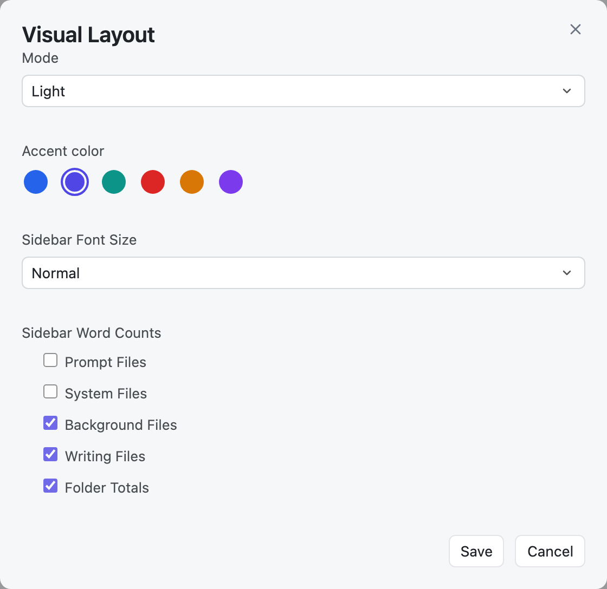
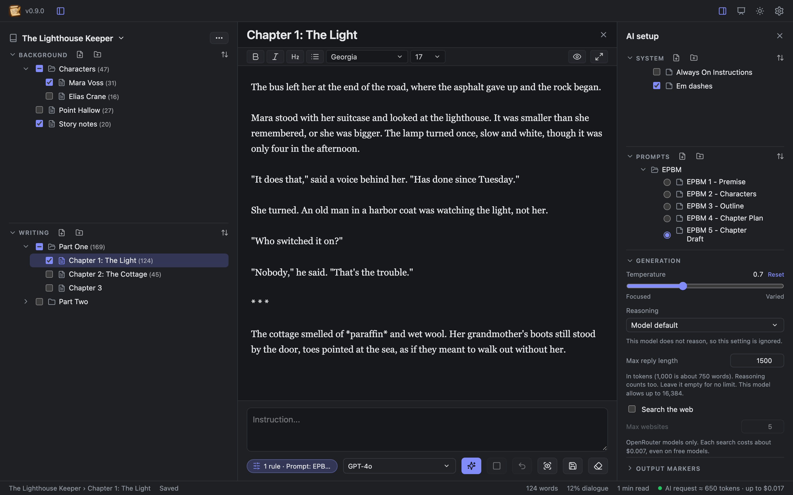
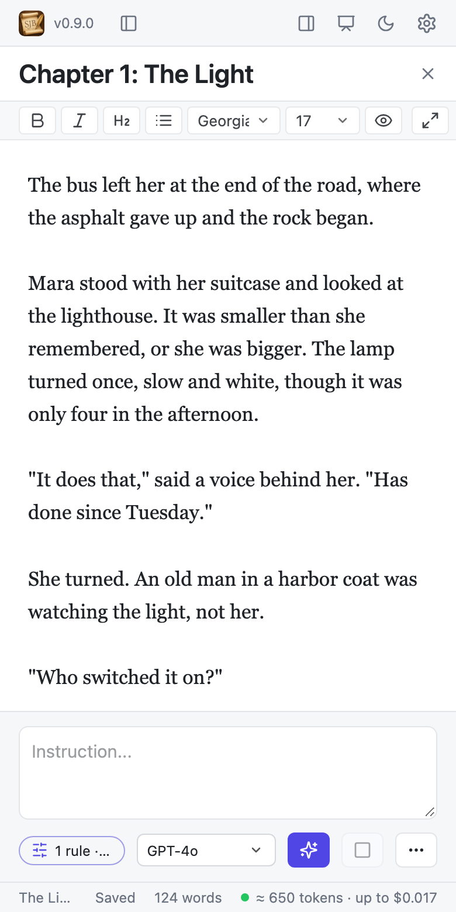

Look and layout
Light or dark, your accent color, and a layout that fits any window.
Light, dark, and accent color
The moon button in the top bar switches between light and dark. For more choices, click the easel button (Visual layout):

- Mode: Light, Dark, or Match system.
- Accent color: blue, indigo, teal, crimson, amber, or violet.
- Sidebar Font Size: Normal or Larger.
- Sidebar Word Counts: which sections show word counts, and folder totals.

These help pages use the same mode and color as the app.
The editor's font
The font and size menus in the formatting toolbar change the editor for all documents. The editor keeps lines at a comfortable reading width.
Panels
- Show or hide the sidebar with its button or ⌘\, and the AI setup panel with its button or ⌘⌥\.
- Drag a panel's inner edge to resize it. Double-click the edge to reset it.
- The editor always keeps enough room. When the window gets too narrow, the AI setup panel tucks itself away and comes back when there is space.
- Toolbar buttons that do not fit move into a ⋯ menu.
Small windows

In a window narrower than about 700 pixels, the sidebar floats over the editor like a drawer: open and close it with the sidebar button. The status bar shows a shorter version of its numbers.